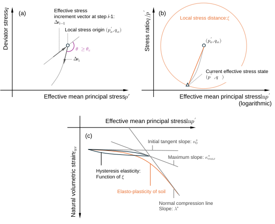
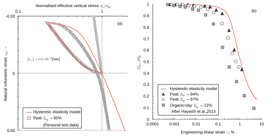

Ch3.1.3
Hysteretic (nonlinear) elasticity
Soils subjected to unloading-reloading typically exhibit hysteretic elasticity, a closed stress-strain loop. There may be some debate as to whether such behaviour should be termed elasticity, but incorporating such nonlinearity into the elastic law remains the simplest and most rational approach, particularly in view of the overall consistency of the model.

The hysteretic elasticity is often associated with a local stress origin $(p'_o,q_o)$ (e.g., Jardine, 1992; Whittle and Kavvadas, 1994), defined as the point where the loading direction reverses as shown in Fig. 3.1.5 (a). In discrete data, the stress reversal can be detected by comparing two consecutive stress increment vectors $\Delta\mathbf{s}_{i-1}=(\Delta p'_{i-1},\Delta q_{i-1})$ and $\Delta\mathbf{s}_i=(\Delta p'_i,\Delta q_i)$ as:
Here, $\theta_c$ is a threshold angle. The stress path moves away from the local stress origin during the subsequent loading / unloading. In this study, this is quantified by a dimensionless distance $\xi$, consistent with elastic energy, as schematised in Fig. 3.1.5 (b):
The special case $p'\to p'_o$ gives:
Adopting the hysteretic parameter $\xi$, the tangential slope $\kappa^*$ is here modelled as:
Here, $\kappa^*_0$ is the initial tangential slope of URL, $\kappa^*_{max}$ the asymptotic maximum tangential slope, and $c>0$ and $n>0$ are material parameters calibrated to unloading-reloading loops as schematised in Fig. 3.1.5 (c). Also, the tangential elastic moduli are given as:
With suitable $c$ and $n$ (Table 3.1.2), the model captures both volumetric and shear responses over small to middle strains. Fig. 3.1.6 (a) compares simulated oedometric stress–strain loops with an experimental data (Personal test data), and Fig. 3.1.6 (b) shows the progressive reduction of the secant shear modulus under cyclic loading (Test data after Hayashi et al., 2013), demonstrating consistent agreement even across different stress paths.

| Assumed natural water content $w$ (%) | $\alpha^2=E_h/E_v$ | $\nu_{vh}$ | $\kappa^*_0$ | $\kappa^*_{max}$ | $c$ | $n$ |
|---|---|---|---|---|---|---|
| 1,000 | 2.4 | 0.02 | $0.03\lambda^*$ | $0.20\lambda^*$ | 2.0 | 4.0 |